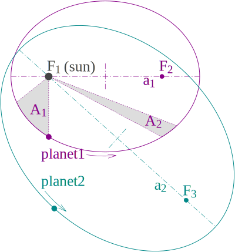

Eccentric anomaly, an intermediate value used to
compute the position of a celestial object as a function of time. Also see:
Eccentricity Vector, the dimensionless vector with direction pointing from apoapsis to
periapsis and with magnitude equal to the orbit's scalar eccentricity.
Orbital Eccentricity, a dimensionless parameter that determines the amount by which its orbit around another
body deviates from a perfect circle.
Value of 0 is a circular orbit
Values between 0 and 1 form an elliptic orbit
Value of 1 is a parabolic escape orbit
Values greater than 1 is a hyperbola
Flyby anomaly, an unexpected energy increase during
the flybys of the Earth by various satellites.
Mean anomaly, a measure of time in the study of
orbital dynamics.
Pioneer anomaly, the observed deviation of the
trajectories of some unmanned space probes.
South Atlantic Anomaly, an area where the Earth's
inner radiation belt comes closest to the Earth's surface.
True anomaly, the angle between the direction of
periapsis and the current position of an object on its
orbit.
Kepler's Laws of Planetary Motion
In astronomy, Kepler's laws of planetary motion are scientific laws describing the motion of planets around the Sun:
The orbit of a planet is an ellipse with the Sun at one of the two foci.
The planetary orbit is not a circle, but an ellipse.
The Sun is not at the center but at a focal point of the elliptical orbit.
Neither the linear speed nor the angular speed of the planet in the orbit is constant, but the area speed (closely linked historically with the concept of angular momentum) is constant.
A line segment joining a planet and the Sun sweeps out equal areas during equal intervals of time.
The square of the orbital period of a planet is directly proportional to the cube of the semi-major axis of its orbit.
Kepler's Third Law: Figure 1. Illustration of Kepler's three laws with two planetary orbits
